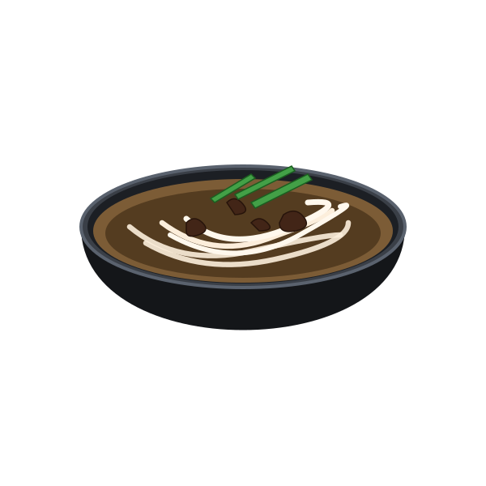

Бүх жор болон хоолнууд


Бууз хийх уламжлалт жор
Амт чанартай шүүслэг бууз хийх уламжлалт арга. Шинэ сайн чанарын хонь эсвэл үхрийн махыг сонгон сонгино, саримсаар амталж чимхэнэ.
See More
Ногоотой цуйвангийн жор
Гар сунгасан гурилыг уураар жигнэж, мах болон төрөл бүрийн ногоогоор холин хуурч бэлтгэнэ.
See More
Халуун чулууны хорхог
Хонины махыг халуун чулуутай хамт саванд битүү чанаж болгодог нүүдэлчдийн өвөрмөц жор.
See More